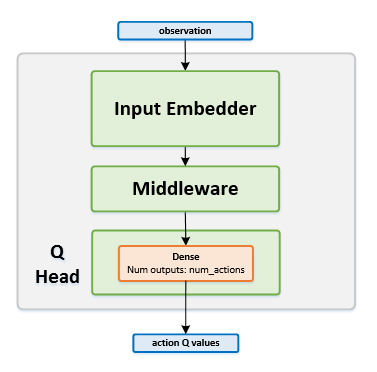

Double DQN¶
Actions space: Discrete
References: Deep Reinforcement Learning with Double Q-learning
Network Structure¶
Algorithm Description¶
Training the network¶
- Sample a batch of transitions from the replay buffer.
- Using the next states from the sampled batch, run the online network in order to find the $Q$ maximizing action \(argmax_a Q(s_{t+1},a)\). For these actions, use the corresponding next states and run the target network to calculate \(Q(s_{t+1},argmax_a Q(s_{t+1},a))\).
- In order to zero out the updates for the actions that were not played (resulting from zeroing the MSE loss), use the current states from the sampled batch, and run the online network to get the current Q values predictions. Set those values as the targets for the actions that were not actually played.
- For each action that was played, use the following equation for calculating the targets of the network: \(y_t=r(s_t,a_t )+\gamma \cdot Q(s_{t+1},argmax_a Q(s_{t+1},a))\)
- Finally, train the online network using the current states as inputs, and with the aforementioned targets.
- Once in every few thousand steps, copy the weights from the online network to the target network.